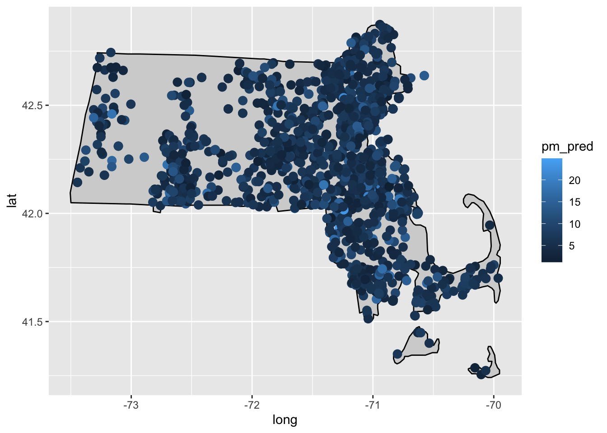

Preparing Date
PM(2.5) vs Patient
Data Preparation
Data set is from Synthetic patient and population health data from the state of Massachusetts
Download complete patients FHIR file from https://synthea.mitre.org/downloads 22G zip tar
Developed python fhir_dataset.py to pull the patients information : patientid, lat, lon, birthdate, gender , start_date_time, end_date_time, code, code_display, start_date, end_date Total patients: 1 million patients
sample result: ran synthea_1m_fhir_3_0_May_24/output_12 code =183478001
output file : patient_encounts_bycode_v2_12.csv
QC dataset. for instance : start date > end date ; misplace birth/death date to hospital stay date
Using the start/end date from patients file run DeGauss pm2.5 model https://degauss.org/pm/
input file for pm2.5 from step 2 command line:docker run –rm -v $PWD:/tmp ghcr.io/degauss-org/pm:0.2.0 tmp/yourdatafile.csv
The following columns been added for each row:
pm_pred : predicted PM2.5 (micrograms per cubic meter)
pm_se : standard error for predicted PM2.5
Output file: patient_encounts_bycode_v2_12_pm_0.2.0.csv
The output file will contain one row per day between start_date and end_date for everyone. Lat(latitude) and lon (longitude) location. This means that the output file will likely contain many more rows than the input file
Run deGUAUSS census block group : https://degauss.org/census_block_group/ Produced a file with additional columns:
• census_block_group_id_2010: identifier for 2010 block group
• census_tract_id_2010: identifier for 2010 tract
Output file: patient_encounts_bycode_v2_12_pm_0.2.0_census_block_group_0.6.0_2010.csv rename to:ms_patient_pm_census_v2.csv
library(readr)
df <- read_csv("./dataset/ms_patient_pm_census_v2.csv",show_col_types = FALSE)dim(df)## [1] 2979 19colnames(df)## [1] "patientid" "lat"
## [3] "lon" "birthdate"
## [5] "gender" "start_date_time"
## [7] "end_date_time" "code"
## [9] "code_display" "start_date"
## [11] "end_date" "date"
## [13] "year" "h3"
## [15] "h3_3" "pm_pred"
## [17] "pm_se" "census_block_group_id_2010"
## [19] "census_tract_id_2010"install packages
if(!require('shiny') || !require('tidycensus') || !require('tidyverse') || !require('viridis')) {
install.packages(c("shiny","tidycensus","tidyverse","viridis"))
}## Loading required package: shiny## Loading required package: tidycensus## Loading required package: tidyverse## ── Attaching core tidyverse packages ───────── tidyverse 2.0.0 ──
## ✔ dplyr 1.1.2 ✔ purrr 1.0.1
## ✔ forcats 1.0.0 ✔ stringr 1.5.0
## ✔ ggplot2 3.4.2 ✔ tibble 3.2.1
## ✔ lubridate 1.9.2 ✔ tidyr 1.3.0
## ── Conflicts ─────────────────────────── tidyverse_conflicts() ──
## ✖ dplyr::filter() masks stats::filter()
## ✖ dplyr::lag() masks stats::lag()
## ℹ Use the conflicted package (<http://conflicted.r-lib.org/>) to force all conflicts to become errors
## Loading required package: viridis
##
## Loading required package: viridisLiteif(!require('plotly')){
install.packages("plotly", type = "source")
}## Loading required package: plotly
##
## Attaching package: 'plotly'
##
## The following object is masked from 'package:ggplot2':
##
## last_plot
##
## The following object is masked from 'package:stats':
##
## filter
##
## The following object is masked from 'package:graphics':
##
## layoutif(!require('ggplot2')) {
install.packages('ggplot2')
}
if(!require('maps') || !require('ggmap')) {
install.packages(c("maps","ggmap"))
}## Loading required package: maps##
## Attaching package: 'maps'## The following object is masked from 'package:viridis':
##
## unemp## The following object is masked from 'package:purrr':
##
## map## Loading required package: ggmap## ℹ Google's Terms of Service: <https://mapsplatform.google.com>
## ℹ Please cite ggmap if you use it! Use `citation("ggmap")` for details.
##
## Attaching package: 'ggmap'
##
##
## The following object is masked from 'package:plotly':
##
## windNote that the echo = FALSE parameter was added to the code chunk to prevent printing of the R code that generated the plot.
0.0.1 Load libraries
Data wrangling
# Check for missing values
sum(is.na(df))## [1] 514# If there are missing values, you can drop or fill them as per your requirement
df <- na.omit(df) # Drop rows with missing valuesChange column name for later map
colnames(df)[which(names(df) == "lon")] <- "longitude"
colnames(df)[which(names(df) =="lat")] <- "latitude"
dim(df)## [1] 2722 19Filter the rows based on the date range Use the subset() function to filter the rows based on the date range:2010 -2017to match 5 year sensus data
filtered_df <- subset(df, date >= as.Date("2012-01-01") & date <= as.Date("2017-09-01"))
dim(filtered_df)## [1] 2124 19write.csv(filtered_df,"./dataset/asthma_small.csv")Combine information for display in tooltip
# Combine the required information for hover tooltip into a new column
filtered_df$tooltip <- paste("PM2.5:", filtered_df$pm_pred, "<br>",
"Hospital Date:", filtered_df$date, "<br>",
"Patient Info:", filtered_df$code_display, "<br>",
"gender :", filtered_df$gender)0.0.2 Create a Geographical Map
Load the required libraries for plotting maps:
library(ggplot2)
library(maps)
library(ggmap)Add map data to the base plot using the map_data() function:
# Draw massachusetts map
ma_map <- map_data("state", region = "massachusetts")
# Create a base plot for Massachusetts
p <- ggplot() +
geom_polygon(data = ma_map, aes(x = long, y = lat, group = group),
fill = "lightgray", color = "black")0.0.3 Plotting the Data Points
Plot the data points on the map using the geom_point() function. Specify the longitude and latitude coordinates, and optionally, the color or size of the data points based on the PM2.5 values:
Add PM2.5 data points with hover information
p <- p + geom_point(data = filtered_df, aes(x = longitude, y = latitude, color = pm_pred,
text = tooltip), size = 3)## Warning in geom_point(data = filtered_df, aes(x = longitude, y =
## latitude, : Ignoring unknown aesthetics: text#you can run this block code on your local to have mouse hover text. for Now it cannot
#rander on R-studio connect
#Convert the plot to a plotly object
# p <- ggplotly(p) %>%
# layout(hoverlabel = list(bgcolor = "white"),
# hovertemplate = paste(
# "<b>%{text}</b>"
# )
# )Draw the map
print(p)